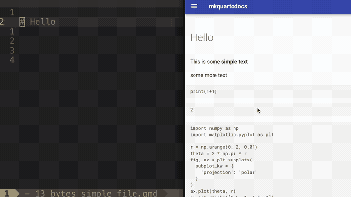

mkquartodocs

Make gorgeous reproducible documentation with quarto and mkdocs
It is a plugin for mkdocs that renders quarto markdown documents into github, so they are built with the rest of the documentation.
Why?
In many instances the documentation contains runnable code, and it makes sense that you verify that the code runs and keep the output of the code in sync with the current status of the document and software packages involved.
But mainly I really got tired of manually rendering documents and copying outpus.
Usage
- Install the dependencies: Installation
- Add the plugin to your configuration: Configuration
- Add
.qmdfiles to your./docs/directoy - Run
mkdocs build
This will render code chunks and save the outputs! Check out https://quarto.org/ for more examples on how to use the format.
This ....
Will become this ...
output
3
Installation
-
Make sure you have quarto installed in your computer.
- https://quarto.org/docs/get-started/
-
Install
mkquartodocs
Configuration
Add mkquartodocs to your plugins in your mkdocs.yml
Available configuration options:
- quarto_path: Specifies where to look for the quarto executable.
- keep_output: If true it will skip the cleanup step in the directory.
- ignore_pattern: a python regular expressions that if matched will mark the file to not be rendered. Note that they need to be full matches
- force_rebuild: If true it will force a rebuild of the quarto documents (instead of trying to skip the document if the .md already exists)
# Whatever is in your mkdocs.yml configuration file....
# ...
plugins:
- mkquartodocs:
quarto_path: /home/my_folder/some/weird/place/to/have/executables/quarto
keep_output: true
ignore: (.*broken.*.qmd)|(.*page[0-9].qmd)
# mkquartodocs will try to render every quarto document in the
# docs directory, you can specify the page names using either the .qmd
# or the .md extension
nav:
- Home: README.md
- Examples:
- 'Simple python execution': 'examples/example.qmd'
- 'Simple dataframe execution': 'examples/dataframe_example.qmd'
- 'Simple mermaid execution': 'examples/mermaid_example.qmd'
- 'Simple matplotlib execution': 'examples/matplotlib_example.qmd'
# These are also required depending on what features you want enabled.
theme:
name: material
markdown_extensions:
- pymdownx.highlight:
anchor_linenums: true
- pymdownx.superfences
Running
NOTHING !!! you do not have to run it manually!!
When you call mkdocs build, it should automatically find your .qmd
files, render them, generate the output and clean after itself.
TODO
The things that need to/could be added to the project:
- [ ] quarto project support
- [ ] render in temporary directory, posibly with a 'safe' argument
- [ ] addition of files not in the docs directory, 'include' argument
- [ ] add readme to testing data
- [ ] move
INFO - mkquartodocs: Running RemoveCellDataPreprocessorto debug log